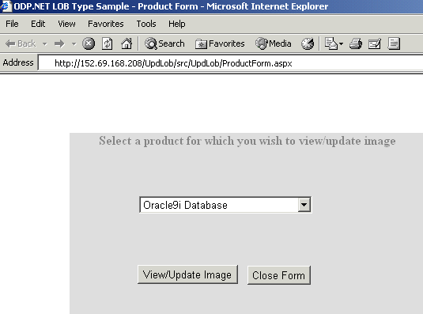
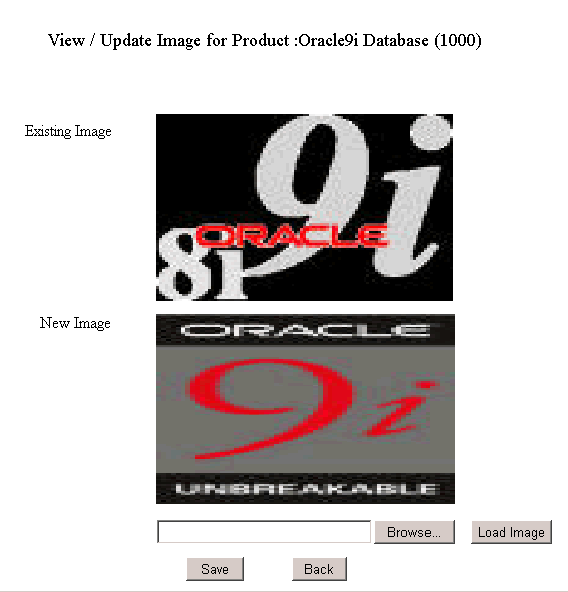
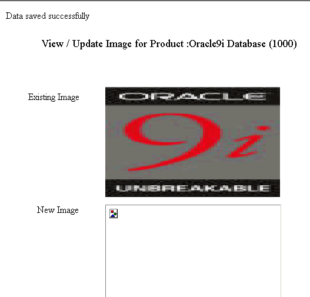

Updating LOBs using ODP.NET LOB Objects Sample
Table of Contents
The purpose of this sample application is to demonstrate:
1) How LOBs can be updated using Oracle Data Provider
for .NET (ODP.NET) LOB Objects ?
2) How to enable Connection Pooling in ODP.NET ?
ODP.NET provides a unique feature of accessing and
manipulating Large Objects (LOBs) like image, sound files etc. using ODP.NET
LOB Types. ODP.NET LOB types are OracleBlob,
OracleClob and OracleBFile.
ODP.NET LOB objects can be obtained by calling the proper typed accessor
on OracleDataReader. To update LOBs (except
BFiles) using ODP.NET objects, a transaction must be started. Then the
row in which the LOB column resides must be locked. Locking can be done
using GetOracleBlobForUpdate typed accessor
on OracleDataReader. GetOracleBlobForUpdate
also returns an updateable BLOB object. To update the data in the database,
one can commit the transaction.
In this sample application scenario, a list of products
is provided to the user. The user can select a product, choose an image
for the product and update the image in the database. For updation, an
OracleBlob object is obtained, a transaction
is started and GetOracleBlobForUpdate is
used. When the transaction is commited, the changes are written to the
database and the lock is released.This demonstrates how LOBs can be updated
using ODP.NET LOB objects.
Connection Pooling refers to caching of database connections.
This allows reuse of physical connections and reduces overhead for your
application. By default Connection Pooling is enabled in ODP.NET. In order
to control the behavior of Connection Pooling in ODP.NET, attributes like
MinPoolSize, IncrPoolSize
etc. can be set. In this sample application the pooling attributes can
be set in ConnectionParams.vb class file.
When this sample application is run, a listbox populated
with products from "Printmedia"
table is displayed as shown in Figure 1.1. One can select a product from
the list and click "View/ Update Image" button, this would redirect
the control to "ImgForm". To close this form one can click "Close
Form" button.

Figure 1.1: Screenshot of initial screen of this
sample application
At "ImgForm", if the image for the selected
product exists then it appears in the "Existing Image" Image
Box, else the "Existing Image" Image Box appears empty. To update
product with a new image, one can choose an image by clicking "Browse"
button. To load and view this image one has to click on "Load Image"
Button. The new image would appear in "New Image" Image Box.
As shown in Figure 1.2.

Figure 1.2 : Displays existing, new image for the
product selected
To save new image to database one should click the
"Save" button. On successful LOB updation, a message "Data
Saved Successfully" appears on this form. Also, the saved image appears
in "Existing Image" Image Box and "New Image" Image
box is cleared as shown in Figure 1.3. To select other products for updation
one can click on "Back" button. This takes the control back
to "ProductForm".

Figure 1.3 : Screenshot after updating image
-
Microsoft Internet Information Services (IIS)
5.0 or later, installed on Microsoft Windows 2000 environment with
Service Pack 2 or later.
-
Visual Basic.NET installed with MS Development
Environment 7.0 version (MS Visual Studio .NET) including MS
.NET Framework 1.0 version
-
Oracle9i Database Enterprise Edition
or later running SQL*Net TCP/IP listener (can be downloaded here)
-
Oracle Data Provider for .NET (ODP.NET) (can
be downloaded here)
.
-
Any Web browser like Internet Explorer 5.5 or
later
Unzip UpdLob.zip
using Winzip or command utility to your convenient directory referred
to as <Extract_Dir>.
Extraction of the zip file results in the creation of "UpdLob"
directory. Refer Description of Sample Files
section for more details.
Connect
to your database as any user and run the script UpdLob\setup\DatabaseSetup.sql
at the SQL
prompt.
SQL>
@<Extract_Dir>\UpdLob\setup\DatabaseSetup.sql
This script will prompt for the username, password
and connectstring. You may choose any existing username. Tables will get
created in specified users schema. Printmedia
table gets created by running DatabaseSetup.sql
file.
Note: To keep the setup simple, Printmedia
table contains no image.
1. Ensure that the Database setup
has been completed.
2. To publish your project from IIS, a virtual directory
needs to be created. A virtual directory is a shared resource that is
identified by an alias that represents a physical location on a server.
Follow the steps given below to create a virtual directory for the sample:
- Go to Start Menu -> Settings
-> ControlPanel -> Administrative Tools -> Internet Services
Manger -> Internet Information Services ->
<Host Name>
-> Default Web Site. Right click on Default Web Site and select New
-> Virtual Directory.
- A Virtual Directory Creation
Wizard starts.
- Give the alias as
UpdLob
for Web Virtual Directory . Click Next.
- Enter the location as
<Extract_Dir>\UpdLob,
to associate the given alias to this physical location. Click Next.
<Extract_Dir> is the folder where
you have unzipped this sample application.
- Ensure that the Read, Run Scripts
access permission are set for this virtual directory. Click Next. Click
Finish.
- This completes the creation of
Virtual Directory.
3. Open Visual Studio.NET. To create a new web project,
click on File-> New-> Project-> Visual
Basic Projects-> ASP.NET Web Application, and give the project
location mapping to your virtual directory ,
For eg. http://<Server-Name>/UpdLob/src,
where
<Server-Name> is
the Host Name or IP address as per your IIS installation.
UpdLob is the directory from where your
project will be published. (created in the preceding step)
/src is the directory
where your project will be created.
Click OK.
4. To add the sample application files to your project,
go to File -> Add Existing Item. In the File dialog select the sample
files from <Extract_Dir>\UpdLob\src.
Select ConnectionManager.vb, ConnectionParams.vb, Error.*, GetImage.*,
ImgForm.*, ProductForm.* files and add them to your project. To
view the added files, go to Solution Explorer and click "Show All
Files" button from the icon bar.
5. In Solution Explorer, double click on
ConnectionParams.vb file to edit it. Change the database
connection parameters i.e. UserName, Password, TNSName as given while
doing Database Setup. Also change Connection Pooling
parameters as per your requirement. Save this file.
6. Select ProductForm.aspx
from Solution Explorer. Right click on ProductForm.aspx
and select "Set As Start Page" from the popup menu.
7. Ensure that the following .NET Component References
have been added to the project you have created:
- System
- System.Data
- Oracle.DataAccess
- System.Web
- System.XML
- System.Drawing
To add the above .NET Components
- Go to Menu -> View -> Solution
Explorer.
- Right click on the project you
have created, choose "Add Reference".
- Choose the above .NET Components
from the list displayed.
- Click "Select", then
OK.
- The chosen .NET component gets
added to the project.
8. Go to Menu -> Build -> Build project UpdLob
to build the sample. And run the sample by clicking Debug->Start
Without Debugging in Visual Studio.NET environment. Or manually
run with the following URL in a web browser.
http://<Server-Name>/UpdLob/src/ProductForm.aspx
For eg.
http://152.69.170.237/UpdLob/src/ProductForm.aspx
Following is the directory structure of the UpdLob.zip
:
| Directory |
Files |
Description
|
UpdLob\doc\ |
Readme.html |
This file |
| otn.css |
Cascading Stylesheet applied
to Readme.html |
UpdLob\doc\images\ |
*.gif |
Screenshots used in Readme.html
file |
UpdLob\setup |
DatabaseSetup.sql |
Contains script to create
database objects required for this sample |
UpdLob\src\ |
ProductForm.aspx |
Web form that displays
products list |
| Error.aspx |
Web Form to handle errors |
| GetImage.aspx |
This file returns a binary
stream for the image retrieved |
| Imgform.aspx |
This web form contains
UI for displaying existing and new images. |
| ImgForm.aspx.vb |
Contains code for updating
LOBs in the database |
| ConnectionManager.vb |
Contains methods to establish
and close connection to database. |
| ConnectionParams.vb |
Contains user defined
database connection parameters |
| GetImage.aspx.vb |
Contains code for retrieving
product image from database and returning binary stream to response |
| ProductForm.aspx.vb |
Contains code for displaying
products list |
| Error.aspx.vb |
Code behind file corresponding
to error.aspx |
| *.resx |
.NET XML resource templates |
|